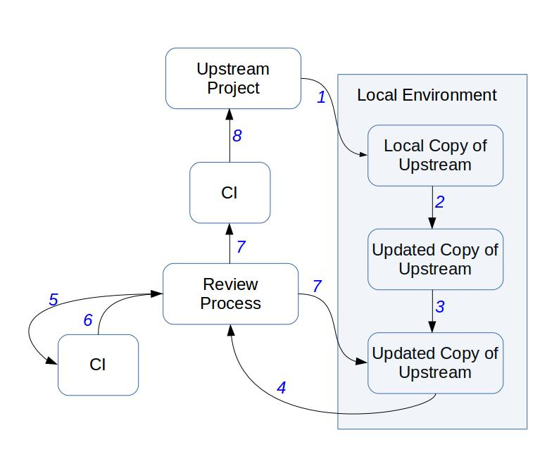
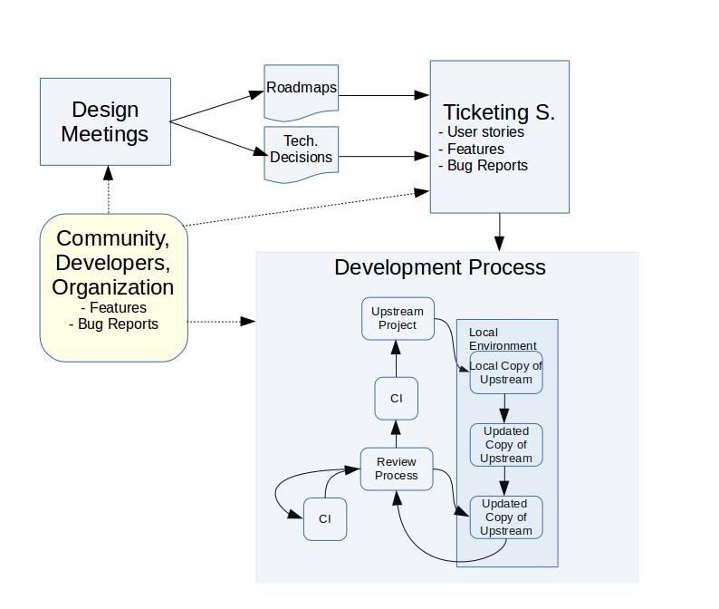

Basic Infrastructure
As InnerSource is mainly about cultural change, we need to have an easy-access and low barrier tools. The easier to use, the more developers that will try in first place to work with other business units and inner-sourced projects.
Although there is a code review process and this takes time to learn, there are other areas where developers can start to contribute. From documentation and mere typos in the collaborative wiki to design meetings and even review activities in projects of your interest or asking for feature requests. There is a myriad of potential actions that anyone within the organization can help with. And the goal of InnerSource is to foster those actions as much as possible letting developers know that those actions are really much appreciated.
The infrastructure is thus divided into three main areas:
-
In first place the development process infrastructure that contains the basic tooling for developers. Selecting the right tools will help to have a clear process and that process will bring trustiness to the community. Any developer must follow that process and work-arounds should not exist. As an example, any developer, even core or trusted committers should face a review process when submitting a piece of code. It is clear that trusted committers have a reputation in the community and this will help in the review process, but they still need to go through the process. A clear workflow brings trust across the business units. That certainty in the definition of requirements, software development process, use of versioning or ticketing systems, the code review process and the continuous integration helps with this.
-
In second place a solid use of the communication channels infrastructure. These tools should be as transparent as possible and any technical meeting must be followed by a summary of results and decisions in the mailing list. This helps to open technical discussions, but also to reference to previous decisions made. As we are considering large organizations, it is also necessary the use of asynchronous communication channels such as the usual IRC in open source communities. More advanced options could be the use of Slack but also Mattermost if the organization prefers to use open source and in house SaaS deployments.
-
In third place the monitoring infrastructure is key when applying InnerSource and in general when bringing a new methodology to organizations. This is one of the main differences with open source communities. They are open by default and basically follow the detailed key aspects. However, infrastructure to measure process advances have not been one of the main goals in the case of open source communities. Basically they are using a successful development methodology, each of them with their own peculiarities, but open by default. InnerSource needs of this type of infrastructure as managers and developers need feedback about their performance. A change in the software development process of large organizations, a cultural change and the community building process needs a large set of actions and those actions should have the confirmation that they are working. For this the organization and its business units need of a monitoring infrastructure.
Development Process Infrastructure
When developing there are three main tools to take into account: the versioning , code review and continuous integration systems. Those should follow a process similar to the one depicted in the following picture. If this process is familiar to you is because this is based on the OpenStack software development process as detailed in their wiki site. I have copied the workflow as this contains the basic pieces also needed for InnerSource. Other communities use a similar approach, although I did not find a nice picture! Sorry folks!. In addition to this, this is a new figure as I wanted to have it independent of the infrastructure. OpenStack uses Git, Gerrit and other tooling for this process, but others are also possible. As an example the Linux Kernel uses mailing lists for the code review process or the Mozilla community that uses another toolchain. Think of the figure as a generic way to introduce code review and continuous integration aspects in the software development process.
In short, the process in the figure is as follows: the developer should clone the repository(1) make changes to it (2), run some local tests (3), pull request those changes (4), tests will be run (5) with a specific result (6). If that result is negative, then we need to go through a new version of the code and come back to the local environment (7: Review process -> Updated Copy of Upstream). If the CI works and there is a positive answer from the Review Process, then this go again through CI before being committed to master (8). If the review process provides a negative evaluation then the piece of code goes back again to the submitter (7: Review process -> Updated Copy of Upstream).

-
Versioning system: this tool is used by developers to store the several iterations of a given piece of software. As developers are basically geographically distributed, the versioning system should allow this type of interactions, where any developer at any time may submit a piece of code to be reviewed. Systems that allow off-line development are highly recommended as developers will be able to locally work and later submit the code.
-
Code review system: once the piece of code is ready to be submitted, this should be previously reviewed by another developer. This forces developers to submit that piece of code through a specific process. As an example, there are several ways where open source communities code review others, using specific tools, sending the piece of code to a mailing list or integrated in the versioning system tool. As one of the main goals when inner sourcing is to keep the process as simple as possible, the main recommendation is to avoid too noise channels (as mailing lists) or too hard to use tools. It is also recommended to use tools that help others to start developing a new piece of source code without needing to submit that to review. Early discussions in the code review process helps to produce better code and having mentors involved in the process.
-
Continuous integration (CI) system: this is one of the key tooling when developing. There are already several eyes having a look at the source code in the code review process. With the addition of a continuous integration platform, any type of test should be covered: regression, unit testing, end user tests, etc. Ideally this platform should be integrated with the code review process. In this way, developers can wait for the answer for the CI system before proceeding with the code review process. They would be sure that this works prior any effort from them.
-
Ticketing system: tickets are useful to attract community to an InnerSource project. This helps in two specific ways: transparency of the development process, raising issues and having a roadmap of the issues to be closed. And in second place, to provide a platform for newcomers and users to detail their needs. Tickets are helpful to bring community in inner source projects as users of the platform will open bug reports, but also feature requests. And even those can socialized as the community can vote those reports and declare what are the most important for them. This information is key to let developers know about the community and business units needs. Then all of this can be discussed during the design summits defining further roadmaps based on users, developers and organizations requirements.
-
Documentation system: documentation is now available to any member of the organization. And documentation has extra goals when producing it. Not only to developers, but to users. Indeed the documentation should be focused on several roles. From developers to users, the documentation should cover their needs. And as such, documentation should be transparent and open to any potential change from members. This will help to adequate the documentation to the users needs, but also to other members within the organization. The tool used should allow to have all of these pieces of information. From the usual developers APIs to high level users interested in understanding what that piece of code offers to the organization. It is worth mentioning that the documentation also covers information as general as the mission and the type of things that the piece of code does and the things that this does not do.
-
Collaborative design platform: InnerSource in large organizations is a synonym of geographically distributed teams. Face to face meetings are hard to have in this type of organizations, but there should exist infrastructure to bridge those difficulties. Requirements specifications, technical decisions, TODOs lists and others should be stored in this type of collaborative environments. This will provide transparency to the process, but also informal documentation and communication. Even when the developers are in face to face meetings, those tools should be used as they will leave traces of activity readable by others within the organization.

Communication Channels Infrastructure
InnerSource is about cultural change. And that cultural change is based on transparency and meritocracy. Communication channels should be open within the organization, and anyone is allowed to post to them.
Any decision out of the public channels should be later written down in these as any decision should be traceable and referenceable.
-
Mailing Lists / Forums: this asynchronous way of communicating across the developer teams is highly effective. Being geographically distributed force the members of the organization to avoid direct communication channels when possible as people lives in different time zones.
-
Instant Messaging: this is another asynchronous communication channel. From the usual IRC channels used in open source software, to other open source options such as Mattermost, this helps to lead technical discussions, store the log information and have all of the developers in a virtual room where they can discuss, but also users can enter looking for advice.
-
Questions / Answers: this type of platforms help to raise questions and share those with the rest of the community. Users and developers can vote the most interesting ones and this helps to bring attention to issues of interest for the internal inner-sourced community.
-
Video conference: face to face meeting definitively helps. And even more when discussing about technical issues. This type of synchronous communication channels are useful for discussions but force people to be at the same time in the same virtual room. As there could be members from several time zones, those are more difficult to set than conversations in the instant messaging or mailing lists.
Monitoring Infrastructure
This infrastructure is needed to understand the current situation of the software development process and should help in the decision making process. One of the key aspects when choosing a specific toolchain is that this is data retrieval friendly. This means that any tool is now a data source and such data source should provide a way to mine this. This will provide raw data information that should be later parsed and treated to be useful.
There is extra information in the metrics chapter, but in brief, any organization applying InnerSource, or any other new methodology, should have a way to check how that new process is performing when compared to the old way.
This monitoring infrastructure should also have as outcomes several ways of accessing such information. And this depends on the role accessing the information. Although everyone in the organization may have access to the information released by the development and communication channels toolchain, not all of them will be interested in accessing the raw data or the high level and quarterly reports focused on C-level.
For this the monitoring platform should provide access to the raw data retrieved from all of the data sources, to the enriched data after removing inconsistencies, and the final outcomes as dashboards, KPIs or quarterly reports. Indeed, having actionable data will help the members of the community to align those outcomes to their specific needs.
The following is a potential architecture that could help when accessing the several data layers, from raw information to detailed visualizations.

-
Retrieval Platform: this first part uses as input any of the data sources already mentioned. Version systems, mailing lists, tickets, collaborative documents and others should have some way of retrieving the information those contain. There may be some tools that produce events and those events are not stored anymore. This platform should take care of these cases. As an example of temporary logs, if there is not a policy to take care of the Apache logs or the jobs run by a Jenkins instance, there is not a way to retrieve old datasets.
-
Enrichment Platform: this part of the data analysis focuses on cleaning and preparing the data for visualization.
-
Visualization Platform: this third part of the monitoring platform should help to produce the outcomes needed to track the status of the methodology process. By visualization, this platform produces actionable charts, but also KPIs or static documents to be shared with third parties.